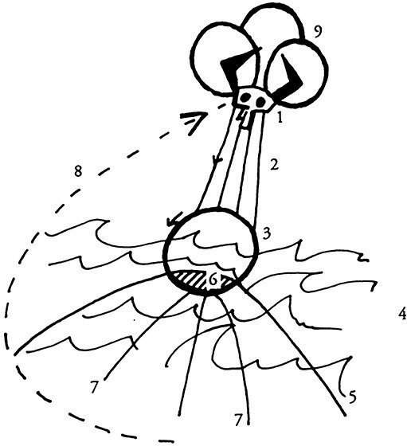

Rules and interpretation: behavioral account
We study how participants respond when the literal text of a rule diverges from the rule's underlying purpose in simple dictator game design experiment.

Assistant Professor of Law
Jagiellonian University · Faculty of Law and Administration
I am a philosopher of law interested in experimental jurisprudence.
I completed my PhD at Jagiellonian University and was a postdoctoral researcher at the University of Silesia in Katowice.
My research lies at the intersection of behavioral economics, law, and institutional design. I use controlled experiments to study how people interpret and comply with formal rules.
Rules and interpretation: behavioral account
We study how participants respond when the literal text of a rule diverges from the rule's underlying purpose in simple dictator game design experiment.
Rules and interpretation: behavioral account
What do people think others should do when a rule's text and purpose diverge? We elicit normative judgments using Likert scales and deduction-point tasks across all six divergence conditions.
I gratefully acknowledge financial support from the following institutions and programs.
"Rule Interpretation in Social Dilemmas: A Laboratory Investigation"
"Behavioral Approaches to Institutional Design"
Faculty Research Development Fund